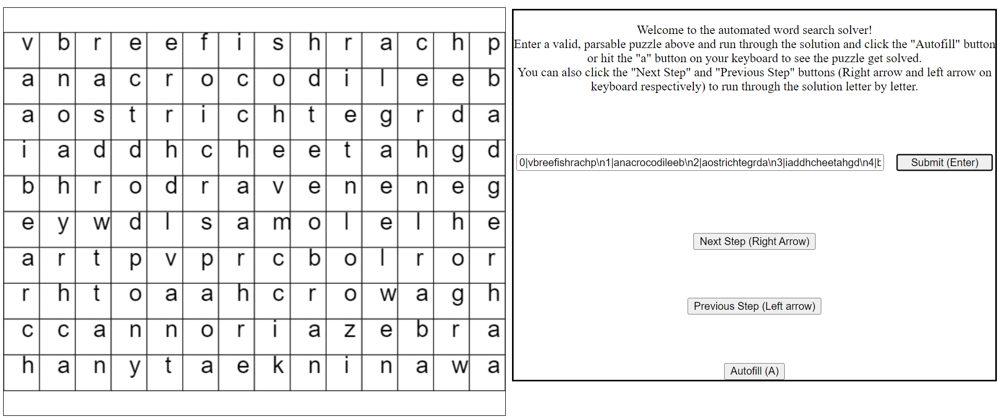

Demo
Specifications
Before implementing anything, I wrote complete, declarative, and deterministic specifications for every function I was planning to create. These, along with the function signatures, helped me keep track of each module's purpose and made it easy to tell what each part of the code was meant to be doing by just glancing at it.
Test Suite
After writing the specs, I used JavaScript's Mocha framework to create an automated test suite. For each public function in the code, I partitioned cases based on the input and output space, and created suites that would cover these partitions using as few tests as possible. Having these tests made it easy to see if anything broke while implementing new features.
Grammar and Parser
In order to allow users to define puzzles, I used the parserlib library to define a grammar that describes how to enter line numbers and characters to create a new puzzle. Using parserlib, I also wrote code to parse user input to match this grammar and create an instance of the Grid abstract data type with the result.
Implementation
After writing the specs and test cases, I started working on the implementation of both helper and public functions. The one pictured is responsible for finding the locations of all the words in the puzzle.
Display and User Input
I created the UI to display the letters and give the user instructions for how to interact with the page. I also added buttons and keydown event listeners to allow the user to solve the puzzle step by step or all at once, as well as some to undo the most recent step.